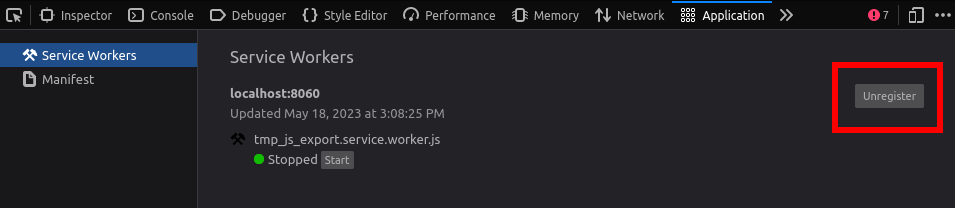

Xuất cho Web
Xem thêm
Trang này mô tả cách xuất một dự án Godot sang HTML5. Nếu bạn muốn biên dịch các binary của trình chỉnh sửa hoặc export template từ mã nguồn, hãy đọc Biên dịch cho Web.
Xuất HTML5 cho phép phát hành các game làm bằng Godot Engine lên trình duyệt. Việc này yêu cầu trình duyệt của người dùng hỗ trợ WebAssembly và WebGL 2.0.
Chú ý
Các dự án viết bằng C# dùng Godot 4 hiện chưa thể xuất lên web. Xem bài blog này để biết thêm thông tin.
Để dùng C# trên nền tảng web, hãy dùng Godot 3.
Mẹo
Dùng developer console tích hợp sẵn trong trình duyệt, thường mở bằng F12 hoặc Ctrl + Shift + I (Cmd + Option + I trên macOS), để xem thông tin gỡ lỗi như lỗi JavaScript, lỗi engine và lỗi WebGL.
Nếu phím tắt không hoạt động, đó là vì Godot đang chiếm input. Bạn vẫn có thể mở developer console thông qua menu của trình duyệt.
Ghi chú
Do các lo ngại bảo mật liên quan tới SharedArrayBuffer vì nhiều lỗ hổng khác nhau, việc dùng nhiều luồng trên nền tảng Web có nhiều nhược điểm, bao gồm yêu cầu các header phía server cụ thể và cô lập cross-origin hoàn toàn (nghĩa là không có quảng cáo hay tích hợp bên thứ ba trên website chứa game của bạn).
Kể từ Godot 4.3, Godot hỗ trợ xuất game chạy trên một luồng duy nhất, giúp giải quyết vấn đề này. Dù bản thân cách này cũng có một số nhược điểm (không thể dùng luồng, và hiệu năng không bằng bản xuất đa luồng), nó không đòi hỏi nhiều công sức thiết lập. Nhìn chung, nó cũng tương thích tốt hơn với các cửa hàng như itch.io hay các nhà phát hành Web như Poki hoặc CrazyGames. Bản xuất đơn luồng cũng hoạt động rất tốt trên macOS và iOS, nơi bản xuất đa luồng luôn gặp vấn đề tương thích.
Vì những lý do này, đây là cách được ưu tiên và hiện là cách mặc định để xuất game lên Web.
Để biết thêm thông tin, xem bài blog về xuất Web đơn luồng này.
Xem thêm
Xem danh sách các issue đang mở trên GitHub liên quan tới xuất web để biết danh sách các lỗi đã biết.
Tên file xuất
Chúng tôi khuyên bạn nên xuất dự án Web với tên file index.html. index.html thường là file mặc định được web server tải khi truy cập thư mục cha, và thường ẩn tên file đó đi.
Chú ý
Bản xuất Web của Godot 4 yêu cầu một số file có cùng tên với tên đã đặt trong lần xuất ban đầu. Có thể xảy ra một số vấn đề nếu đổi tên một số file đã xuất, bao gồm cả file HTML chính.
Phiên bản WebGL
Godot 4 chỉ có thể nhắm tới WebGL 2.0 (dùng phương thức kết xuất Compatibility). Forward+/Mobile không được hỗ trợ trên nền tảng web, vì các phương thức kết xuất này được thiết kế cho các API đồ họa cấp thấp hiện đại. Godot hiện chưa hỗ trợ WebGPU, vốn là điều kiện tiên quyết để Forward+/Mobile có thể chạy trên nền tảng web.
Xem Can I use WebGL 2.0 để biết danh sách các phiên bản trình duyệt hỗ trợ WebGL 2.0. Lưu ý rằng Safari có một số vấn đề với việc hỗ trợ WebGL 2.0 mà các trình duyệt khác không có, vì vậy chúng tôi khuyên bạn nên dùng trình duyệt dựa trên Chromium hoặc Firefox nếu có thể.
Lưu ý cho thiết bị di động
Bản xuất Web có thể chạy trên nền tảng di động với một số lưu ý. Dù các bản xuất native cho Android và iOS luôn có hiệu năng tốt hơn đáng kể, bản xuất Web cho phép mọi người chạy dự án của bạn mà không cần thông qua các cửa hàng ứng dụng.
Hãy nhớ rằng hiệu năng CPU và GPU rất quý giá khi chạy trên thiết bị di động. Điều này càng đúng hơn khi chạy một dự án xuất lên Web (vì đó là WebAssembly thay vì native code). Xem phần Hiệu năng của tài liệu để có lời khuyên về tối ưu dự án. Nếu dự án của bạn chạy trên các nền tảng khác ngoài Web, bạn có thể dùng Feature tag để áp dụng các cài đặt hướng tới máy cấu hình thấp khi chạy dự án xuất lên Web.
Để tăng tốc thời gian tải trên thiết bị di động, bạn cũng nên biên dịch một export template được tối ưu với các tính năng không dùng đến được tắt đi. Tùy vào các tính năng dự án sử dụng, việc này có thể giảm đáng kể kích thước payload WebAssembly, giúp tải về và khởi tạo nhanh hơn (kể cả khi đã được cache).
Phát âm thanh
Kể từ Godot 4.3, việc phát âm thanh trên nền tảng web được thực hiện bằng Web Audio API. Chế độ phát Sample này cho phép độ trễ thấp ngay cả khi dự án được xuất không có hỗ trợ luồng, nhưng nó có một số giới hạn:
Không hỗ trợ AudioEffects.
Không hỗ trợ các hiệu ứng vang và doppler.
Không hỗ trợ tạo âm thanh theo thủ tục (procedural).
Âm thanh theo vị trí có thể không phải lúc nào cũng hoạt động đúng, tùy vào các thuộc tính của node.
Để dùng hệ thống phát âm thanh riêng của Godot trên nền tảng web, bạn có thể thay đổi chế độ phát mặc định bằng cài đặt dự án Audio > General > Default Playback Type.web, hoặc đổi thuộc tính Playback Type thành Stream trên một node class_AudioStreamPlayer, class_AudioStreamPlayer2D hoặc class_AudioStreamPlayer3D. Việc này làm tăng độ trễ (đặc biệt khi tắt hỗ trợ luồng), nhưng cho phép toàn bộ các tính năng âm thanh của Godot hoạt động.
Tùy chọn xuất
Nếu có sẵn một web export template có thể chạy được, một nút sẽ xuất hiện giữa các nút Stop scene và Play edited Scene trong trình chỉnh sửa để nhanh chóng mở game trong trình duyệt mặc định nhằm kiểm thử.
Nếu dự án của bạn dùng GDExtension, cần bật Extension Support.
Nếu bạn định dùng nén VRAM, hãy đảm bảo VRAM Texture Compression được bật cho các nền tảng mục tiêu (bật cả For Desktop và For Mobile sẽ cho bản xuất lớn hơn nhưng tương thích tốt hơn).
Nếu cung cấp đường dẫn tới một file Custom HTML shell, file đó sẽ được dùng thay cho trang HTML mặc định. Xem Trang HTML tùy chỉnh cho bản xuất Web.
Head Include được chèn vào phần tử <head> của trang HTML được tạo ra. Ví dụ, điều này cho phép tải webfont và các JavaScript API bên thứ ba, chèn CSS, hoặc chạy code JavaScript.
Theo mặc định, kích thước cửa sổ sẽ tự động khớp với kích thước cửa sổ trình duyệt. Nếu bạn muốn dùng kích thước cố định bất kể kích thước cửa sổ trình duyệt, hãy đổi Canvas Resize Policy thành None. Điều này cho phép điều khiển kích thước cửa sổ bằng code JavaScript tùy chỉnh trong HTML shell. Bạn cũng có thể đặt thành Project để nó hoạt động gần giống bản xuất native hơn, theo cài đặt dự án.
Quan trọng
Mỗi dự án phải tạo file HTML riêng của mình. Khi xuất, một số placeholder dạng văn bản sẽ được thay thế trong file HTML được tạo ra, tương ứng với các tùy chọn xuất đã chọn. Mọi chỉnh sửa trực tiếp trên file HTML đó sẽ bị mất ở các lần xuất sau. Để tùy biến file được tạo ra, hãy dùng tùy chọn Custom HTML shell.
Hỗ trợ luồng và extension
Nếu bật Thread Support, dự án đã xuất sẽ có thể tận dụng đa luồng để cải thiện hiệu năng. Điều này cũng cho phép phát âm thanh với độ trễ thấp khi chế độ phát được đặt là Stream (thay vì Sample mặc định được dùng trong bản xuất web). Bật tính năng này yêu cầu dùng các header cô lập cross-origin, được mô tả trong phần Phục vụ các file bên dưới.
Nếu bật Extensions Support, GDExtension sẽ có thể được tải. Lưu ý rằng GDExtension vẫn cần được biên dịch riêng cho nền tảng web mới hoạt động được. Giống như hỗ trợ luồng, bật tính năng này yêu cầu dùng các header cô lập cross-origin.
Xuất dưới dạng Progressive Web App (PWA)
Nếu bật Progressive Web App > Enable, nó sẽ có một số tác dụng:
Cấu hình icon độ phân giải cao, chế độ hiển thị và hướng màn hình. Các mục này được cấu hình ở cuối phần Progressive Web App trong các tùy chọn xuất. Các tùy chọn này được dùng nếu người dùng thêm dự án vào màn hình chính của thiết bị, điều thường thấy trên nền tảng di động. Việc này cũng được hỗ trợ trên nền tảng desktop, dù ở mức hạn chế hơn.
Cho phép tải dự án mà không cần kết nối Internet nếu trước đó nó đã được tải ít nhất một lần. Điều này hoạt động được nhờ service worker được cài đặt khi dự án được tải lần đầu trong trình duyệt của người dùng. Service worker này cung cấp phương án dự phòng cục bộ khi không có kết nối Internet.
Lưu ý rằng trình duyệt web có thể chọn xóa dữ liệu đã cache nếu người dùng sắp hết dung lượng đĩa, hoặc nếu người dùng lâu không mở dự án. Để đảm bảo dữ liệu được cache lâu hơn, người dùng có thể đánh dấu trang (bookmark), hoặc tốt nhất là thêm nó vào màn hình chính của thiết bị.
Nếu dữ liệu ngoại tuyến không còn vì đã bị xóa khỏi cache, bạn có thể cấu hình một Offline Page sẽ được hiển thị trong trường hợp này. Trang này phải ở định dạng HTML và sẽ được lưu trên máy của người dùng ở lần đầu dự án được tải.
Đảm bảo các header cô lập cross-origin luôn có mặt, kể cả khi web server chưa được cấu hình để gửi chúng. Điều này cho phép các bản xuất có bật luồng hoạt động khi được host trên bất kỳ website nào, kể cả khi bạn không có cách nào kiểm soát các header mà website đó gửi.
Có thể tắt hành vi này bằng cách bỏ chọn Enable Cross Origin Isolation Headers trong phần Progressive Web App.
Hạn chế
Vì lý do bảo mật và quyền riêng tư, nhiều tính năng hoạt động dễ dàng trên các nền tảng native lại phức tạp hơn trên nền tảng web. Dưới đây là danh sách các giới hạn bạn cần biết khi port một game Godot lên web.
Quan trọng
Các nhà phát triển trình duyệt ngày càng chỉ cung cấp nhiều chức năng trong secure context, nghĩa là các tính năng đó chỉ khả dụng nếu trang web được phục vụ qua kết nối HTTPS bảo mật (localhost thường được miễn yêu cầu này).
Xử lý nền
Trình duyệt sẽ tạm dừng dự án khi tab của nó không còn là tab đang hoạt động trong trình duyệt của người dùng. Điều này có nghĩa là các hàm như _process() và _physics_process() sẽ không chạy nữa cho tới khi người dùng kích hoạt lại tab (bằng cách chuyển lại về tab đó). Việc này có thể khiến game chơi qua mạng bị ngắt kết nối nếu người dùng chuyển tab trong thời gian dài.
Giới hạn này không áp dụng cho các cửa sổ trình duyệt không được focus. Vì vậy, phía người dùng có thể khắc phục bằng cách chạy dự án trong một cửa sổ riêng thay vì một tab riêng.
Toàn màn hình và chiếm chuột
Trình duyệt không cho phép tùy ý vào chế độ toàn màn hình. Điều tương tự áp dụng cho việc chiếm con trỏ chuột. Thay vào đó, các hành động này phải xảy ra như một phản hồi cho sự kiện input JavaScript. Trong Godot, điều này có nghĩa là vào chế độ toàn màn hình từ bên trong một callback xử lý sự kiện input được nhấn, như _input hoặc _unhandled_input. Truy vấn singleton class_Input là không đủ, sự kiện input liên quan phải đang hoạt động.
Vì cùng lý do đó, cài đặt dự án toàn màn hình sẽ không hoạt động trừ khi engine được khởi động từ bên trong một trình xử lý sự kiện input hợp lệ. Việc này yêu cầu tùy biến trang HTML.
Âm thanh
Một số trình duyệt giới hạn việc tự động phát âm thanh trên website. Cách đơn giản nhất để vượt qua giới hạn này là yêu cầu người chơi nhấp chuột, chạm hoặc nhấn một phím/nút để bật âm thanh, chẳng hạn khi hiển thị màn hình splash lúc bắt đầu game.
Xem thêm
Google cung cấp thêm thông tin về chính sách tự động phát Web Audio của họ.
Nhóm Safari của Apple cũng đã đăng thêm thông tin về Auto-Play Policy Changes for macOS của họ.
Cảnh báo
Truy cập micro yêu cầu một secure context.
Cảnh báo
Kể từ Godot 4.3, theo mặc định các bản xuất Web sẽ dùng sample thay vì stream để phát âm thanh.
Điều này là do cách trình duyệt ưu tiên phát âm thanh và do thiếu năng lực xử lý khi xuất game Web với tùy chọn xuất Use Threads bị tắt.
Xin lưu ý rằng hiệu ứng âm thanh chưa được triển khai cho sample.
Mạng
Mạng cấp thấp không được triển khai do trình duyệt không hỗ trợ.
Hiện tại chỉ hỗ trợ HTTP client, HTTP request, WebSocket (client) và WebRTC.
Các lớp HTTP cũng có một số hạn chế trên nền tảng HTML5:
Không thể truy cập hoặc thay đổi
StreamPeerKhông có chế độ Threaded/Blocking
Không thể xử lý tiến trình nhiều hơn một lần mỗi frame, nên polling trong vòng lặp sẽ bị treo
Không hỗ trợ phản hồi dạng chunked
Không thể tắt xác minh host
Chịu ràng buộc của same-origin policy
Clipboard
Đồng bộ clipboard giữa engine và hệ điều hành yêu cầu trình duyệt hỗ trợ Clipboard API; ngoài ra, do bản chất bất đồng bộ của API, nó có thể không đáng tin cậy khi được truy cập từ GDScript.
Cảnh báo
Yêu cầu một secure context.
Tay cầm chơi game
Tay cầm sẽ không được phát hiện cho tới khi một trong các nút của nó được nhấn. Tay cầm có thể bị ánh xạ sai tùy vào tổ hợp trình duyệt/hệ điều hành/tay cầm; đáng tiếc là Gamepad API không cung cấp cách đáng tin cậy để phát hiện thông tin tay cầm cần thiết cho việc ánh xạ lại theo model/nhà sản xuất/hệ điều hành, vì lý do quyền riêng tư.
Cảnh báo
Yêu cầu một secure context.
Phục vụ các file
Xuất cho web tạo ra một số file cần được phục vụ từ web server, bao gồm một trang HTML mặc định để hiển thị. Có thể dùng file HTML tùy chỉnh, xem Trang HTML tùy chỉnh cho bản xuất Web.
Cảnh báo
Chỉ khi xuất với Use Threads, để đảm bảo độ trễ âm thanh thấp và khả năng dùng class_Thread trong bản xuất web, các bản xuất web của Godot 4 sẽ dùng SharedArrayBuffer. Điều này yêu cầu một secure context, đồng thời cũng yêu cầu đặt các header CORS sau khi phục vụ các file:
Cross-Origin-Opener-Policy: same-origin
Cross-Origin-Embedder-Policy: require-corp
Nếu bạn không kiểm soát web server hoặc không thể thêm response header, hãy chọn Progressive Web App > Enable trong các tùy chọn xuất. Việc này áp dụng một giải pháp thay thế dựa trên service worker, cho phép dự án chạy bằng cách giả lập sự có mặt của các response header này. Trong trường hợp này vẫn cần secure context.
Nếu client không nhận được các response header bắt buộc hoặc giải pháp dựa trên service worker không được áp dụng, dự án sẽ không chạy.
File .html được tạo ra có thể dùng làm DirectoryIndex trên các server Apache và có thể đổi tên thành, ví dụ, index.html bất cứ lúc nào. Theo mặc định, không có gì phụ thuộc vào tên của nó.
Trang HTML vẽ game ở kích thước tối đa trong cửa sổ trình duyệt. Nhờ vậy, nó có thể được chèn vào một <iframe> có kích thước bằng game, như cách phổ biến trên hầu hết các trang host game web.
Các file đã xuất khác được phục vụ nguyên trạng, nằm cạnh file .html, giữ nguyên tên. File .wasm là một module WebAssembly dạng binary hiện thực engine. File .pck là gói chính của Godot chứa game của bạn. File .js chứa code khởi động và được file .html dùng để truy cập engine. File .png chứa ảnh boot splash.
File .pck là binary, thường được phân phối với MIME-type application/octet-stream. File .wasm được phân phối dưới dạng application/wasm.
Cảnh báo
Phân phối module WebAssembly (.wasm) với MIME-type khác application/wasm có thể ngăn một số tối ưu khi khởi động.
Nên phân phối các file với nén phía server, đặc biệt là các file .pck và .wasm vốn thường có kích thước lớn. Module WebAssembly nén đặc biệt tốt, xuống còn khoảng một phần tư kích thước gốc với nén gzip. Hãy cân nhắc dùng nén trước bằng Brotli nếu web server của bạn hỗ trợ để tiết kiệm thêm dung lượng file.
Các host có nén tức thời: GitHub Pages (gzip)
Các host không có nén tức thời: itch.io, GitLab Pages (hỗ trợ nén trước thủ công bằng gzip)
Mẹo
Repository của Godot có kèm một script Python để chạy web server cục bộ. Script này dùng để kiểm thử trình chỉnh sửa web, nhưng cũng có thể dùng để kiểm thử các dự án đã xuất.
Lưu script được liên kết vào một file tên serve.py, di chuyển file này vào thư mục chứa index.html của dự án đã xuất, rồi chạy lệnh sau trong command prompt tại cùng thư mục đó:
# You may need to replace `python` with `python3` on some platforms.
python serve.py --root .
Trên Windows, bạn có thể mở command prompt tại thư mục hiện tại bằng cách giữ Shift và nhấp chuột phải vào vùng trống trong Windows Explorer, rồi chọn Open PowerShell window here.
Lệnh này sẽ phục vụ nội dung của thư mục hiện tại và tự động mở trình duyệt web mặc định.
Lưu ý rằng không nên dùng web server dựa trên Python này cho môi trường production. Thay vào đó, bạn nên dùng một web server phổ biến như Apache hoặc nginx.
Tương tác với trình duyệt và JavaScript
Xem trang riêng về cách tương tác với JavaScript và truy cập một số tính năng đặc thù của trình duyệt Web.
Biến môi trường
Bạn có thể dùng các biến môi trường sau để đặt tùy chọn xuất bên ngoài trình chỉnh sửa. Trong quá trình xuất, chúng sẽ ghi đè các giá trị bạn đã đặt trong menu xuất.
Tùy chọn xuất |
Biến môi trường |
|---|---|
Encryption / Encryption Key |
|
Khắc phục sự cố
Chạy bản xuất cục bộ lại hiển thị một dự án khác
Nếu dùng one-click deploy trong nhiều dự án, bạn có thể nhận thấy một trong các dự án đã triển khai trước đó được hiển thị thay cho dự án bạn đang làm. Nguyên nhân là do cơ chế cache của service worker, hiện chưa có cơ chế tự động làm mới cache (cache busting).
Để khắc phục tạm thời, bạn có thể hủy đăng ký service worker hiện tại theo cách thủ công để cache được đặt lại. Việc này cũng cho phép đăng ký một service worker mới. Trong các trình duyệt dựa trên Chromium, mở Developer Tools bằng cách nhấn F12 hoặc Ctrl + Shift + I (Cmd + Option + I trên macOS), rồi nhấp vào tab Application trong DevTools (nó có thể bị ẩn sau biểu tượng mũi tên nếu khung devtools hẹp). Bạn có thể chọn rồi tải lại trang, hoặc nhấn bên cạnh service worker đang được đăng ký, rồi tải lại trang.

Hủy đăng ký service worker trong DevTools của trình duyệt dựa trên Chromium
Quy trình tương tự trên Firefox. Mở developer tools bằng cách nhấn F12 hoặc Ctrl + Shift + I (Cmd + Option + I trên macOS), nhấp vào tab Application trong DevTools (nó có thể bị ẩn sau biểu tượng mũi tên nếu khung devtools hẹp). Nhấn bên cạnh service worker đang được đăng ký, rồi tải lại trang.

Hủy đăng ký service worker trong DevTools của Firefox
Tùy chọn xuất
Bạn có thể tìm danh sách đầy đủ các tùy chọn xuất trong tài liệu tham khảo lớp class_EditorExportPlatformWeb.